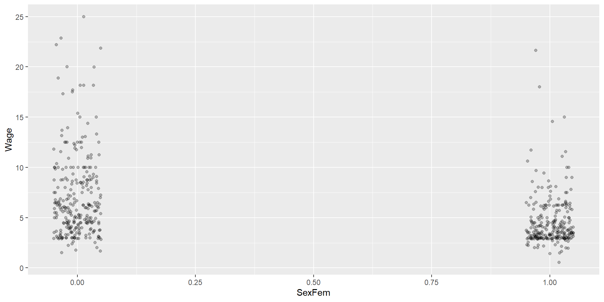
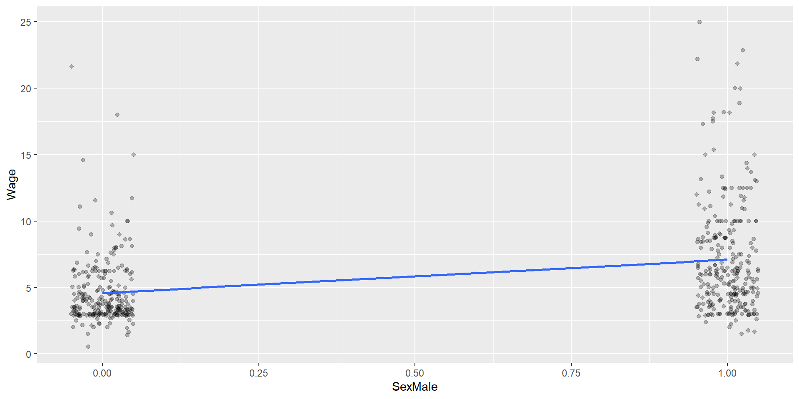

# A tibble: 4 × 2
Waterfront_yes Waterfront_no
<dbl> <dbl>
1 0 1
2 0 1
3 1 0
4 0 1Qualitative Independent Variables (Dummy Variables)
Regression, Dummies, One-Hot Encoding, AB-Tests
What Will You Learn
Understanding how categorical data such as the sex of a person (female/male) can be transformed into numerical dummy variable.
Being able to distinguish between dummy encoding and one-hot encoding
AB-Tests vs Univariate Regression with Dummies
Dummy and One-Hot Encoding
One-Hot Encoding
One-hot encoding is easier to interpret but causes problems in OLS (dummy trap) because one variable is redundant. We can calculate one variable from the other (perfect multicollinearity):
\[Waterfront_{yes}=1-Waterfront_{no}\] »
Dummy and One-Hot Encoding
Dummy Coding
We use one variable less than we have categories. Waterfront has two categories. Therefore, we use one variable (e.g., Waterfront_yes):
Dummy Encoding Example
# A tibble: 4 × 1
Waterfront_yes
<dbl>
1 0
2 0
3 1
4 0»
Sex Based Wage Discrimination (univariate)
Plotting the Data
Plotting the Data with Transparency (alpha) and Jittered
Plotting the Data with Regression Line
Plotting the Data with Regression Line using SexMale Rather Than SexFem
Sex Discrimination
Regression
Call:
lm(formula = Wage ~ SexFem, data = DataWage)
Coefficients:
(Intercept) SexFem
7.099 -2.512 Comparing Means as in A/B Tests.
Code
Avg. female wage: 4.587659Code
Avg. male wage: 7.099489A/B-Test vs. Observational Data Analysis
A/B-Test: Data derived from an experiment
- Assignment to Control and Treatment group must be random and unbiased.
- Use t-test to see if group means are statitically significant
- Gold Standard: Use when you can
Observational Data:
- Second best
- Data are from the past
- Biases can be corrected
AB-Test vs. Observational Data
Fun Examples 1:
Class Size:
The Dean uses the university’s course system and claims the average class size is 35 students.
The Student Association ask 500 students on the squad how big was the last class they attended. The result is 54
What happened?
From Allen Downey, PROBABLY OVERTHINKING IT, https://www.allendowney.com/blog/
Fun Examples 2:
Fertility Rate:
We want to find the average offsprings a mother had (fertility rate) about 30 years ago:
We survey 1,000 people age 30 and ask how many offsprings their mother had.
What is wrong with this methedology?
From Allen Downey, PROBABLY OVERTHINKING IT, https://www.allendowney.com/blog/
Marketing Example
You run a company similar than ChatGPT, but it is not free. The customers (private people) can upload their own data right on the sign-in page and then use AI that considers their data.
The sign-in page is more like a portal and offers various services. You always thought your sign-in page is well designed.
A consulting firm made a new sign in page for you that is supposed to be better designed.
You give your customers two sign-in page options:
“classic”
“new design”
You want to test if conversion (measured in hours of services used) is higher on the newly designed sign-up page.
You collect data from last month.
Data from Last Month
library(rio)
DataObserv=import("../DataObservAndABTest.xlsx", sheet = "DataObserv")
print(DataObserv) EducYears Age NewSignUpPage ConvHours
1 12 23 TRUE 5
2 12 27 TRUE 0
3 12 57 FALSE 0
4 23 19 TRUE 25
5 15 33 FALSE 35
6 15 28 FALSE 32
7 23 28 TRUE 31
8 18 53 TRUE 20
9 18 57 FALSE 5
10 21 28 FALSE 19
11 21 29 TRUE 45
12 21 67 FALSE 0Run a Regression with LM
Call:
lm(formula = ConvHours ~ NewSignUpPage, data = DataObserv)
Coefficients:
(Intercept) NewSignUpPageTRUE
15.167 5.833 Looks like the new page performed well. 5.8 more hours per month.
Selection Bias: More Young and Educated Customers Tried the New Design
Regression Age: Younger People use the side more often
Age:
Regression Educated: People with Higher Education use the side more often
Education:
Call:
lm(formula = ConvHours ~ EducYears, data = DataObserv)
Coefficients:
(Intercept) EducYears
-10.92 1.65 If education years increases by one year, monthly services used increase by 0.49 hours.
What to do when AB Test is not possible?
Participants not randomly assigned but self selected
Trial and Control Group are biased
A univariate regression with a dummy variable does not solve the problem, since it gives the same results
What to do when AB Test is not possible?
In many cases an AB Test or an Experiment is not possible because you cannot assign subjects randomly to the experiment or placebo (trial and control) group.
This might lead to a biased sample!
Example: Sex based wage discrimination
Example: Sex Based Wage Discrimination
Wage is not only determined by \(SexFem\), but also by other variables such as \(Educ\):
Call:
lm(formula = Wage ~ Educ, data = DataWage)
Residuals:
Min 1Q Median 3Q Max
-5.3396 -2.1501 -0.9674 1.1921 16.6085
Coefficients:
Estimate Std. Error t value Pr(>|t|)
(Intercept) -0.90485 0.68497 -1.321 0.187
Educ 0.54136 0.05325 10.167 <2e-16 ***
---
Signif. codes: 0 '***' 0.001 '**' 0.01 '*' 0.05 '.' 0.1 ' ' 1
Residual standard error: 3.378 on 524 degrees of freedom
Multiple R-squared: 0.1648, Adjusted R-squared: 0.1632
F-statistic: 103.4 on 1 and 524 DF, p-value: < 2.2e-16Example: Sex Based Wage Discrimination
Correlation \(Educ\) and \(SexFem\): \(Educ\) is determined by \(SexFem\):
Call:
lm(formula = Educ ~ SexFem, data = DataWage)
Residuals:
Min 1Q Median 3Q Max
-12.3175 -0.7883 -0.3175 1.6825 5.6825
Coefficients:
Estimate Std. Error t value Pr(>|t|)
(Intercept) 12.7883 0.1668 76.652 <2e-16 ***
SexFem -0.4709 0.2410 -1.953 0.0513 .
---
Signif. codes: 0 '***' 0.001 '**' 0.01 '*' 0.05 '.' 0.1 ' ' 1
Residual standard error: 2.762 on 524 degrees of freedom
Multiple R-squared: 0.00723, Adjusted R-squared: 0.005335
F-statistic: 3.816 on 1 and 524 DF, p-value: 0.05129DAG for this Situation
Second best (since AB Test is not possible)
Control for the impact of \(Educ\) on \(Wage\)
run a multi-variate regression (possibly with instruments variables; covered in future session)
Draw Acrylic Graph!
Give it a trial:
We look at two scenarios:
Educ not correlated with SexFem (the unrealistic scenario)
Educ not correlated with SexFem (the realistic scenario)
Testing with Synthetic Variables: DAG
Assumption: No Correlation Between Educ and SexFem
Testing with Synthetic Variables: Regression 1a
Assumption: With Correlation Between Educ and SexFem
One Variables:
Code
Call:
lm(formula = Wage ~ SexFem, data = DataWageSynNoCor)
Residuals:
Min 1Q Median 3Q Max
-12.8265 -2.2821 -0.0651 2.3380 10.3890
Coefficients:
Estimate Std. Error t value Pr(>|t|)
(Intercept) 16.0954 0.1064 151.3 <2e-16 ***
SexFem -2.2357 0.1490 -15.0 <2e-16 ***
---
Signif. codes: 0 '***' 0.001 '**' 0.01 '*' 0.05 '.' 0.1 ' ' 1
Residual standard error: 3.332 on 1998 degrees of freedom
Multiple R-squared: 0.1012, Adjusted R-squared: 0.1008
F-statistic: 225 on 1 and 1998 DF, p-value: < 2.2e-16Testing with Synthetic Variables: Regression 1b
Assumption: No Correlation Between Educ and SexFem
Two Variables:
Call:
lm(formula = Wage ~ SexFem + Educ, data = DataWageSynNoCor)
Residuals:
Min 1Q Median 3Q Max
-8.0204 -1.6476 0.0255 1.7148 7.7651
Coefficients:
Estimate Std. Error t value Pr(>|t|)
(Intercept) -1.29347 0.43641 -2.964 0.00307 **
SexFem -2.30307 0.11046 -20.850 < 2e-16 ***
Educ 1.15602 0.02854 40.512 < 2e-16 ***
---
Signif. codes: 0 '***' 0.001 '**' 0.01 '*' 0.05 '.' 0.1 ' ' 1
Residual standard error: 2.469 on 1997 degrees of freedom
Multiple R-squared: 0.5067, Adjusted R-squared: 0.5062
F-statistic: 1025 on 2 and 1997 DF, p-value: < 2.2e-16Testing with Synthetic Variables: DAG
Assumption: With Correlation Between Educ and SexFem

Testing with Synthetic Variables: Regression 2a
Creating Data with Correlation Between Educ and SexFem
DataWageSynWithCor= arrange(DataWageSynNoCor, SexFem, Educ) |>
tail(-200) |>
head(-200)
ModelSexEduc=lm(Educ~SexFem, data=DataWageSynWithCor)
summary(ModelSexEduc)
Call:
lm(formula = Educ ~ SexFem, data = DataWageSynWithCor)
Residuals:
Min 1Q Median 3Q Max
-5.6857 -1.0370 -0.0212 1.1594 4.7813
Coefficients:
Estimate Std. Error t value Pr(>|t|)
(Intercept) 15.70652 0.05364 292.8 <2e-16 ***
SexFem -1.27442 0.07497 -17.0 <2e-16 ***
---
Signif. codes: 0 '***' 0.001 '**' 0.01 '*' 0.05 '.' 0.1 ' ' 1
Residual standard error: 1.499 on 1598 degrees of freedom
Multiple R-squared: 0.1531, Adjusted R-squared: 0.1526
F-statistic: 289 on 1 and 1598 DF, p-value: < 2.2e-16Testing with Synthetic Variables: Regression 2a
Assumption: No Correlation Between Educ and SexFem
One Variables:
Call:
lm(formula = Wage ~ SexFem, data = DataWageSynWithCor)
Residuals:
Min 1Q Median 3Q Max
-9.916 -2.116 -0.079 2.206 9.467
Coefficients:
Estimate Std. Error t value Pr(>|t|)
(Intercept) 16.8674 0.1083 155.77 <2e-16 ***
SexFem -3.7703 0.1513 -24.91 <2e-16 ***
---
Signif. codes: 0 '***' 0.001 '**' 0.01 '*' 0.05 '.' 0.1 ' ' 1
Residual standard error: 3.026 on 1598 degrees of freedom
Multiple R-squared: 0.2797, Adjusted R-squared: 0.2793
F-statistic: 620.6 on 1 and 1598 DF, p-value: < 2.2e-16Testing with Synthetic Variables: Regression 2b
Assumption: No Correlation Between Educ and SexFem
Two Variables:
Call:
lm(formula = Wage ~ SexFem + Educ, data = DataWageSynWithCor)
Residuals:
Min 1Q Median 3Q Max
-7.7917 -1.6801 -0.0044 1.7762 7.7854
Coefficients:
Estimate Std. Error t value Pr(>|t|)
(Intercept) -1.45807 0.65349 -2.231 0.0258 *
SexFem -2.28340 0.13425 -17.008 <2e-16 ***
Educ 1.16674 0.04122 28.302 <2e-16 ***
---
Signif. codes: 0 '***' 0.001 '**' 0.01 '*' 0.05 '.' 0.1 ' ' 1
Residual standard error: 2.47 on 1597 degrees of freedom
Multiple R-squared: 0.5203, Adjusted R-squared: 0.5197
F-statistic: 866.2 on 2 and 1597 DF, p-value: < 2.2e-16